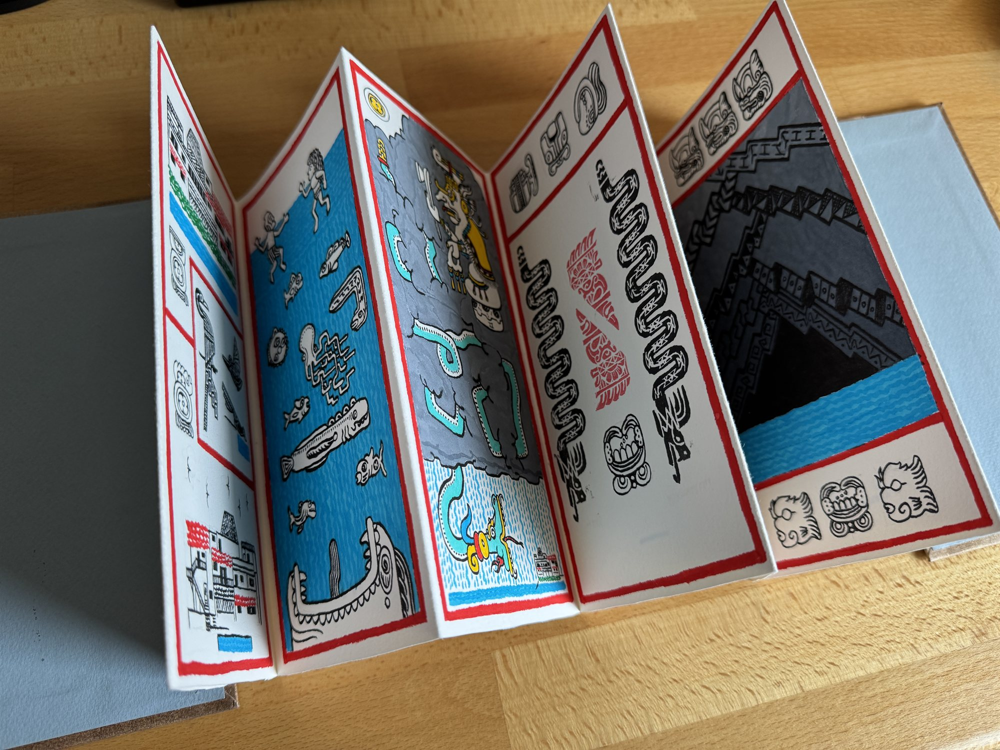
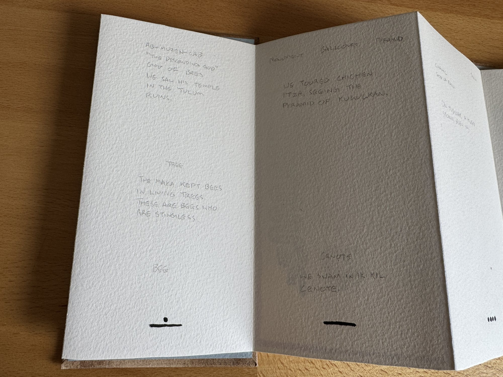
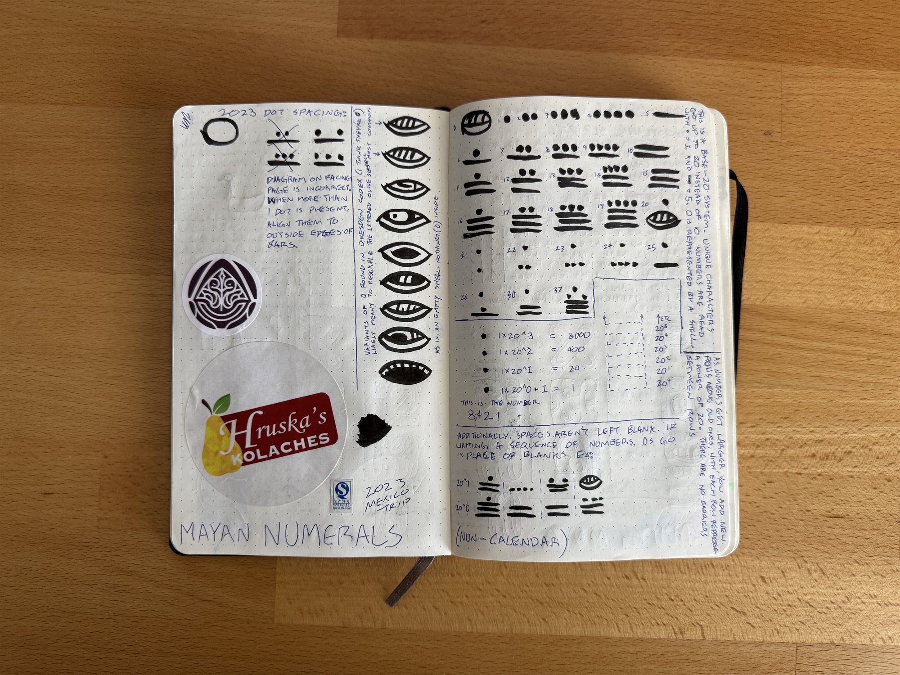
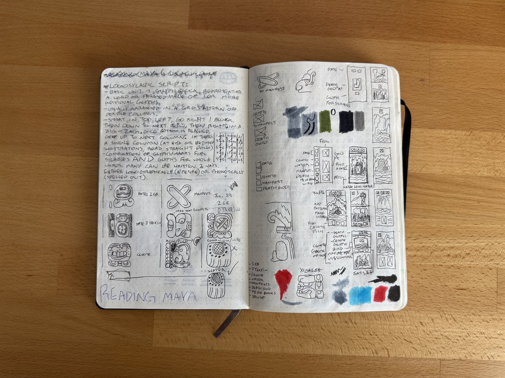
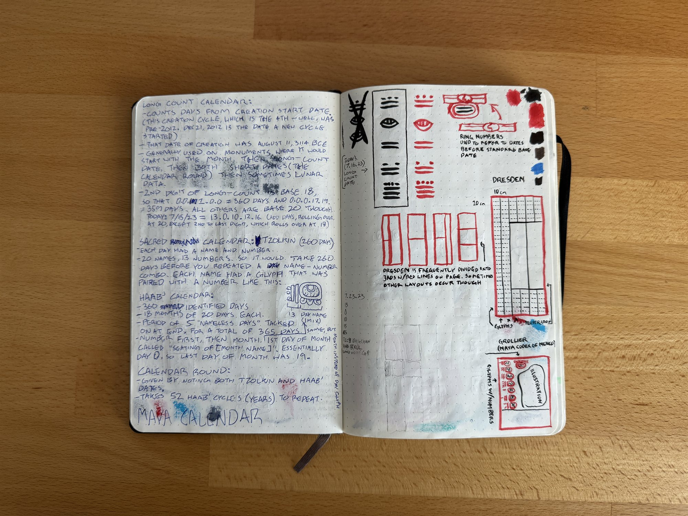
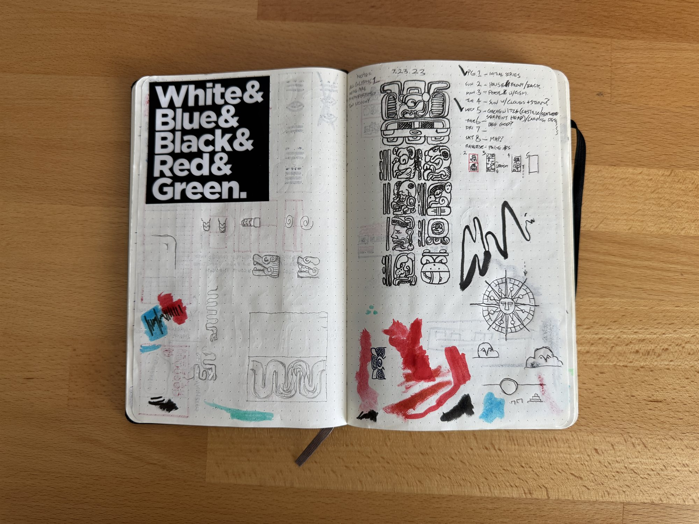
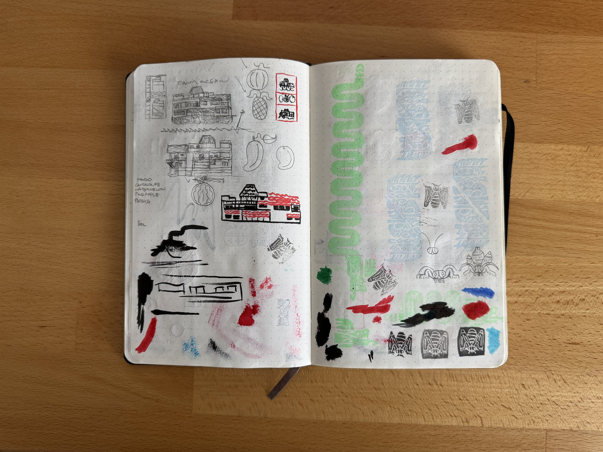
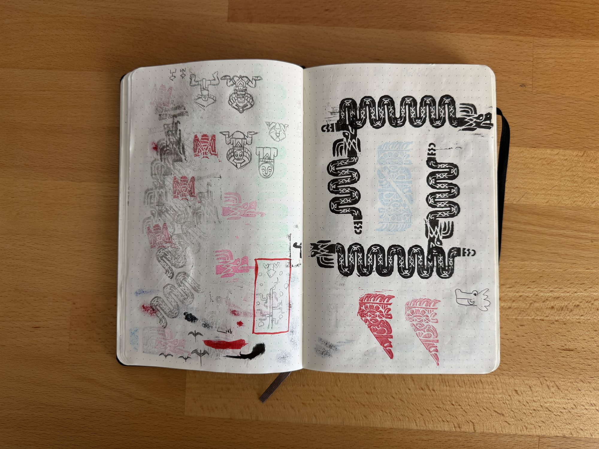
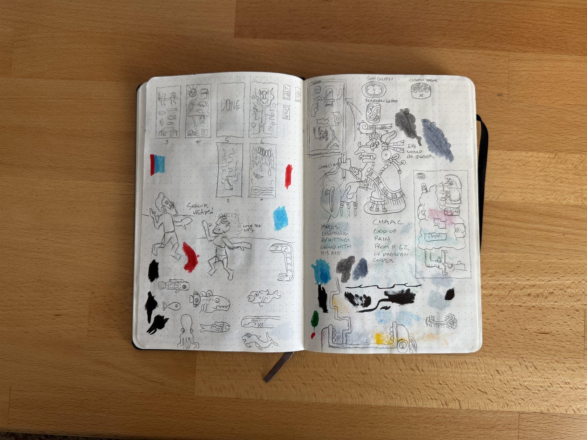

Maya Codex
Before a trip to the Yucatán Peninsula, I bound an accordion-folded travel journal with a page for each day.

Overview
I folded a long sheet of watercolor paper into an accordion, the same binding structure the Maya used for their own bark-paper books, and added a pair of cover boards wrapped in paper I decorated myself. That gave me one blank page for every day of the trip. In the evenings and any spare downtime, I filled in that day's page with illustrations and Maya glyphs based on what we'd done.
In preparation for this, I did a lot of research into the Maya writing system and surviving codices. Only 4 survived the Spanish colonization, but they were enough to give me an idea of what my pages should look like. I found a compendium of glyphs and their meanings, and learned about the various date systems and base-20 numeric system. I'm a big history nerd so this was a fun excuse to hyper-fixate on a new ancient culture for a while.
Memory Aid
On the back of the accordion I wrote out an English translation of each day's glyphs, plus a short summary of what we actually did. I won't have to go search for the meaning of the various glyphs when I look back at this, and it still fulfills its purpose as a journal of our trip.

Research
I knew I wouldn't have a ton of downtime, so I did a lot of research beforehand, learning about the numeric and writing systems. Then once we were there, I did some serious planning in my regular sketchbook before committing to a design in the actual book. I enjoy looking back at these process pages almost as much as the final product.






